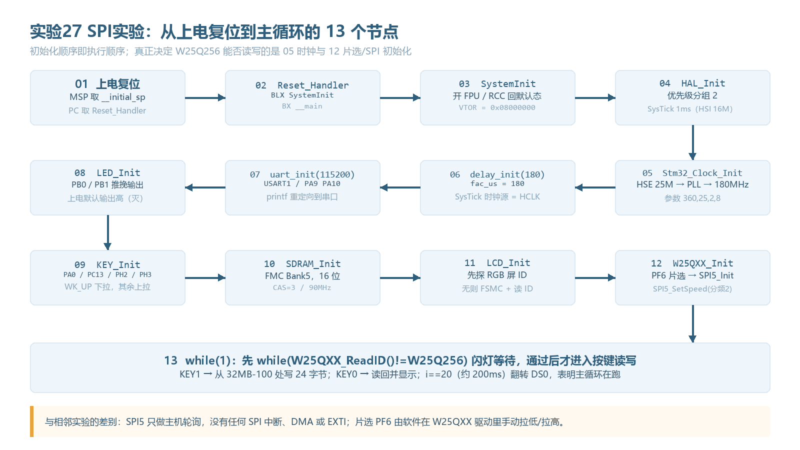
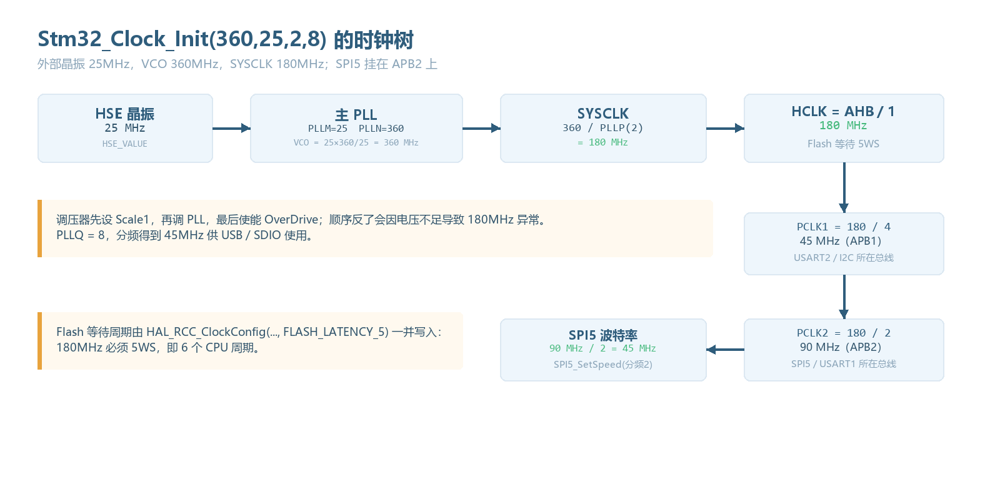
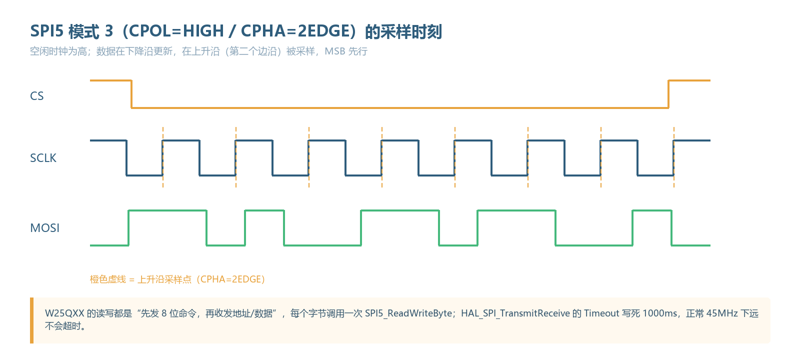
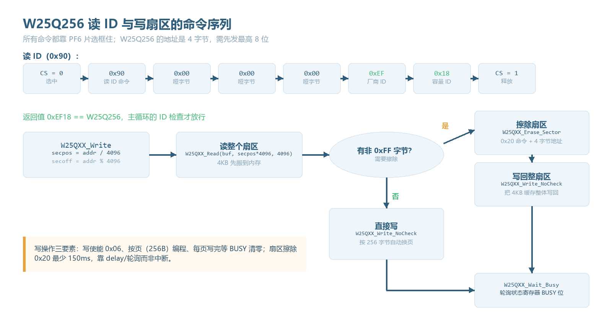
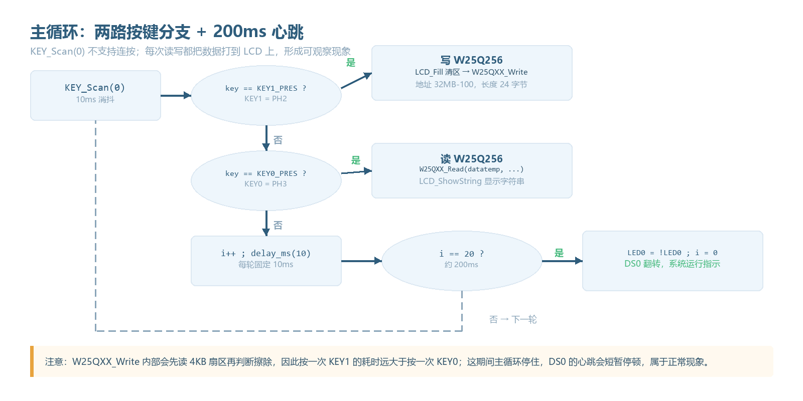

01 实验目标与硬件资源
本实验的目标不是点亮某个灯，而是把一颗外部 SPI Flash 完整地用起来：上电先读 ID 确认型号，确认是 W25Q256 后进入 4 字节地址模式；按下 KEY1 把 24 字节字符串写到 32MB 容量的倒数第 100 个字节处，按下 KEY0 再读回来显示在 LCD 上。能否成功，取决于 SPI5 的时钟、模式、片选和 W25Q256 的 4 字节地址四件事是否同时正确。
| 资源 | 引脚 / 外设 | 关键配置 | 源码证据 |
|---|---|---|---|
| SPI5 主机 | PF7=SCK、PF8=MISO、PF9=MOSI | AF5、复用推挽、上拉、快速 | HARDWARE/SPI/spi.c · HAL_SPI_MspInit |
| 片选 | PF6 | 推挽输出、上拉，软件拉低/拉高 | HARDWARE/W25QXX/w25qxx.c · W25QXX_Init |
| SPI 模式 | SPI5 | 主机、8 位、CPOL=HIGH、CPHA=2EDGE、MSB | spi.c · SPI5_Init |
| 波特率 | SPI5（APB2） | 初始化 256 分频，随后改为 2 分频 = 45MHz | spi.c · SPI5_SetSpeed |
| 存储芯片 | W25Q256 | 32MB，4 字节地址，扇区 4KB、页 256B | USER/main.c · FLASH_SIZE=32*1024*1024 |
| 按键 | KEY1=PH2 写，KEY0=PH3 读 | KEY_Scan(0) 不支持连按 | HARDWARE/KEY/key.c |
| 显示 | LCD（FSMC 或 RGB） | 标题、提示、读写结果都打在屏上 | HARDWARE/LCD/lcd.c · LCD_Init |
| 串口 | PA9 / PA10，115200 | printf 重定向，供调试与 LCD_Init 使用 | SYSTEM/usart/usart.c · fputc |
W25Q256 判断与寻址：W25QXX_ReadID()!=W25Q256 时程序会停在闪灯等待，说明板上焊的是 32MB 版本。02 目录与文件分工
工程沿用正点原子标准例程的分层：USER 放 main 与系统文件，CORE 放启动文件与 CMSIS，SYSTEM 放时钟/延时/串口，HARDWARE 放板级驱动，HALLIB 是 ST 的 HAL 库。本实验新增的是 SPI/spi.c 与 W25QXX/w25qxx.c，其余都是前序实验的复用。
| 目录 / 文件 | 负责什么 | 本页看什么 |
|---|---|---|
CORE/startup_stm32f429xx.s | 栈堆、向量表、复位入口 | Stack_Size、Reset_Handler |
USER/system_stm32f4xx.c | FPU、RCC 复位、VTOR | SystemInit |
USER/main.c | 初始化顺序、ID 检查、按键读写 | main |
USER/stm32f4xx_it.c | 异常入口 | 只有 SysTick_Handler |
HARDWARE/SPI/spi.c | SPI5 参数、GPIO 复用、分频、单字节收发 | SPI5_Init、HAL_SPI_MspInit、SPI5_SetSpeed |
HARDWARE/W25QXX/w25qxx.c | 片选、读 ID、读/写/擦、4 字节地址 | W25QXX_Init、W25QXX_Write |
SYSTEM/sys/sys.c | HSE + PLL 到 180MHz | Stm32_Clock_Init |
SYSTEM/delay/delay.c | SysTick 轮询式 us/ms 延时 | delay_init、delay_us |
SYSTEM/usart/usart.c | USART1 与 printf 重定向 | uart_init、fputc |
HARDWARE/LCD、SDRAM、KEY、LED | 显示与交互，本实验不修改 | 只确认调用顺序与现象 |
HALLIB/.../stm32f4xx_hal_spi.c | HAL SPI 通用实现（只读被调用函数） | HAL_SPI_Init、HAL_SPI_TransmitReceive |
HAL_SPI_Init 如何回调 HAL_SPI_MspInit、SPI5_SetSpeed 如何直接改 CR1 的 BR[2:0]，不去通读整份 HAL。03 启动流程总览

main 函数全文
const u8 TEXT_Buffer[]={"Apollo STM32F4 SPI TEST"}; // 要写入 Flash 的 24 字节字符串
#define SIZE sizeof(TEXT_Buffer) // 长度由编译器算，避免手写错
int main(void)
{
u8 key;
u16 i=0;
u8 datatemp[SIZE]; // 读回数据的落脚点
u32 FLASH_SIZE;
HAL_Init(); //初始化HAL库
Stm32_Clock_Init(360,25,2,8); //设置时钟,180Mhz
delay_init(180); //初始化延时函数
uart_init(115200); //初始化USART
LED_Init(); //初始化LED
KEY_Init(); //初始化按键
SDRAM_Init(); //初始化SDRAM
LCD_Init(); //初始化LCD
W25QXX_Init(); //W25QXX初始化
POINT_COLOR=RED;
LCD_ShowString(30,50,200,16,16,"Apollo STM32F4/F7");
LCD_ShowString(30,70,200,16,16,"SPI TEST");
LCD_ShowString(30,90,200,16,16,"ATOM@ALIENTEK");
LCD_ShowString(30,110,200,16,16,"2016/1/16");
LCD_ShowString(30,130,200,16,16,"KEY1:Write KEY0:Read");
while(W25QXX_ReadID()!=W25Q256) // 读不到 W25Q256 就停在这里闪灯
{
LCD_ShowString(30,150,200,16,16,"W25Q256 Check Failed!");
delay_ms(500);
LCD_ShowString(30,150,200,16,16,"Please Check! ");
delay_ms(500);
LED0=!LED0; //DS0闪烁
}
LCD_ShowString(30,150,200,16,16,"W25Q256 Ready!");
FLASH_SIZE=32*1024*1024; //FLASH 大小为32M字节
POINT_COLOR=BLUE;
while(1)
{
key=KEY_Scan(0);
if(key==KEY1_PRES) // KEY1 按下：写入
{
LCD_Fill(0,170,239,319,WHITE); //清除半屏
LCD_ShowString(30,170,200,16,16,"Start Write W25Q256....");
W25QXX_Write((u8*)TEXT_Buffer,FLASH_SIZE-100,SIZE); // 从倒数第 100 字节开始写
LCD_ShowString(30,170,200,16,16,"W25Q256 Write Finished!");
}
if(key==KEY0_PRES) // KEY0 按下：读回
{
LCD_ShowString(30,170,200,16,16,"Start Read W25Q256.... ");
W25QXX_Read(datatemp,FLASH_SIZE-100,SIZE);
LCD_ShowString(30,170,200,16,16,"The Data Readed Is: ");
LCD_ShowString(30,190,200,16,16,datatemp); // 显示读到的字符串
}
i++;
delay_ms(10);
if(i==20) // 约 200ms 一次心跳
{
LED0=!LED0; //提示系统正在运行
i=0;
}
}
}
HAL_Init()先建立 1ms 时基与优先级分组（本工程重写为分组 2），后面HAL_Delay与HAL_SPI_TransmitReceive的超时判断才有基准。Stm32_Clock_Init(360,25,2,8)把 HSI 切到 HSE+PLL 的 180MHz；delay_init(180)的实参必须与之一致，否则fac_us算错，所有delay_ms都偏。uart_init(115200)必须早于LCD_Init()：LCD 驱动内部用printf输出调试信息，而fputc直接写USART1->DR，串口没初始化就会卡在等待发送标志。W25QXX_Init()放在 LCD 之后、ID 检查之前：它同时完成 PF6 片选、SPI5 参数、45MHz 分频和 4 字节地址模式，缺任何一步后面的读写都会失败。- 主循环先用
while(W25QXX_ReadID()!=W25Q256)做硬件自检，再进入按键分支；这个顺序保证“按 KEY1 写”时芯片一定是可用的。
04 启动文件与向量表
CORE/startup_stm32f429xx.s 是 MDK 版启动文件。它先把栈设为 0x400（1KB）、堆设为 0x200（512B），再把 __initial_sp 放在 __Vectors 的第一个字、Reset_Handler 放在第二个字。复位时 Cortex-M4 硬件自动把这两个值装入 MSP 和 PC，不需要任何 C 代码参与。
Stack_Size EQU 0x400; ; 栈 1024 字节 AREA STACK, NOINIT, READWRITE, ALIGN=3 Stack_Mem SPACE Stack_Size __initial_sp ; 栈顶，向量表第 0 项 Heap_Size EQU 0x200; ; 堆 512 字节，本工程几乎不用 malloc AREA HEAP, NOINIT, READWRITE, ALIGN=3 __heap_base Heap_Mem SPACE Heap_Size __heap_limit AREA RESET, DATA, READONLY EXPORT __Vectors __Vectors DCD __initial_sp ; Top of Stack DCD Reset_Handler ; Reset Handler ; ……其余异常与中断向量省略 Reset_Handler PROC EXPORT Reset_Handler [WEAK] IMPORT SystemInit IMPORT __main LDR R0, =SystemInit BLX R0 ; 先跑 SystemInit LDR R0, =__main BX R0 ; 再进 C 库初始化并调用 main ENDP
- 硬件取向量：
__initial_sp→ MSP，Reset_Handler→ PC，此时还没有任何栈变量。 BLX SystemInit只做芯片级最小配置（FPU、RCC 复位、VTOR），不配时钟树，所以此刻主频仍是 HSI 16MHz。BX __main交给 C 库：拷贝.data、清零.bss，最后才跳进main()；因此 main 里的全局变量已经是确定值。- 启动文件把所有中断入口都写成
[WEAK]的B .死循环，C 文件里定义同名函数即可覆盖，这是后面SysTick_Handler能生效的原因。
05 SystemInit 与 HAL_Init
SystemInit：开 FPU、RCC 回默认、设 VTOR
void SystemInit(void)
{
#if (__FPU_PRESENT == 1) && (__FPU_USED == 1)
SCB->CPACR |= ((3UL << 10*2)|(3UL << 11*2)); // CP10/CP11 全访问，浮点指令可用
#endif
RCC->CR |= (uint32_t)0x00000001; // 打开 HSI
RCC->CFGR = 0x00000000; // 时钟树全部回到不分频
RCC->CR &= (uint32_t)0xFEF6FFFF; // 关 HSEON / CSSON / PLLON
RCC->PLLCFGR = 0x24003010; // PLL 寄存器回默认
RCC->CIR = 0x00000000; // 关所有 RCC 中断
SCB->VTOR = FLASH_BASE | VECT_TAB_OFFSET; // 向量表固定在 0x08000000
}
HAL_Init：时基与优先级分组
HAL_StatusTypeDef HAL_Init(void)
{
__HAL_FLASH_INSTRUCTION_CACHE_ENABLE(); // 指令缓存
__HAL_FLASH_DATA_CACHE_ENABLE(); // 数据缓存
__HAL_FLASH_PREFETCH_BUFFER_ENABLE(); // 预取
HAL_NVIC_SetPriorityGrouping(NVIC_PRIORITYGROUP_2); // 中断优先级分组2
HAL_InitTick(TICK_INT_PRIORITY); // TICK_INT_PRIORITY = 0x0F
HAL_MspInit();
return HAL_OK;
}
__weak HAL_StatusTypeDef HAL_InitTick(uint32_t TickPriority)
{
HAL_SYSTICK_Config(HAL_RCC_GetHCLKFreq()/1000); // 1ms 重装值
HAL_NVIC_SetPriority(SysTick_IRQn, TickPriority ,0);
return HAL_OK;
}
HAL_Init()执行时主频还是 HSI 16MHz，HAL_RCC_GetHCLKFreq()/1000 = 16000，SysTick 每 1ms 中断一次。- 随后
Stm32_Clock_Init把 HCLK 提到 180MHz，但 SysTick 的LOAD仍是 16000，于是中断间隔变成 16000/180MHz ≈ 88.9µs，HAL_Delay(1)实际只有约 62µs。 delay_init(180)只把时钟源设为 HCLK、把fac_us设为 180，并未重写LOAD；所以本工程的delay_ms是“读 SysTick 计数自己算时间”，不依赖中断，仍然是准的。- 结论：这套例程里
HAL_Delay不宜用于精确计时；需要毫秒级等待时统一用delay_ms。
06 时钟、延时与串口

__HAL_RCC_PWR_CLK_ENABLE(); // 使能 PWR 时钟 __HAL_PWR_VOLTAGESCALING_CONFIG(PWR_REGULATOR_VOLTAGE_SCALE1); // 调压器 Scale1 RCC_OscInitStructure.OscillatorType=RCC_OSCILLATORTYPE_HSE; RCC_OscInitStructure.HSEState=RCC_HSE_ON; // 打开 25MHz 晶振 RCC_OscInitStructure.PLL.PLLSource=RCC_PLLSOURCE_HSE; RCC_OscInitStructure.PLL.PLLM=pllm; // 25 分频 → 1MHz 参考 RCC_OscInitStructure.PLL.PLLN=plln; // ×360 → VCO 360MHz RCC_OscInitStructure.PLL.PLLP=pllp; // /2 → SYSCLK 180MHz RCC_OscInitStructure.PLL.PLLQ=pllq; // /8 → 45MHz 给 USB/SDIO ret=HAL_RCC_OscConfig(&RCC_OscInitStructure); if(ret!=HAL_OK) while(1); ret=HAL_PWREx_EnableOverDrive(); // 180MHz 必须开 Over-Drive if(ret!=HAL_OK) while(1); RCC_ClkInitStructure.SYSCLKSource=RCC_SYSCLKSOURCE_PLLCLK; RCC_ClkInitStructure.AHBCLKDivider=RCC_SYSCLK_DIV1; // HCLK 180MHz RCC_ClkInitStructure.APB1CLKDivider=RCC_HCLK_DIV4; // PCLK1 45MHz RCC_ClkInitStructure.APB2CLKDivider=RCC_HCLK_DIV2; // PCLK2 90MHz ret=HAL_RCC_ClockConfig(&RCC_ClkInitStructure,FLASH_LATENCY_5); // 5WS
延时与 printf 重定向
void delay_init(u8 SYSCLK)
{
HAL_SYSTICK_CLKSourceConfig(SYSTICK_CLKSOURCE_HCLK); // SysTick 计数时钟 = HCLK
fac_us=SYSCLK; // 180 → 1us 需要 180 个计数
}
void delay_us(u32 nus)
{
u32 ticks=nus*fac_us; // 需要的节拍数
...
if(tcnt>=ticks)break; // 数够就退出，纯轮询
}
int fputc(int ch, FILE *f)
{
while((USART1->SR&0X40)==0); // 等 TXE 置位
USART1->DR = (u8) ch; // 写数据寄存器
return ch;
}
- VCO = 25MHz ÷ PLLM(25) × PLLN(360) = 360MHz；SYSCLK = 360 ÷ PLLP(2) = 180MHz。
- HCLK = 180 ÷ 1 = 180MHz；PCLK1 = 180 ÷ 4 = 45MHz；PCLK2 = 180 ÷ 2 = 90MHz。
- Flash 在 180MHz 下必须
FLASH_LATENCY_5（5 个等待周期，即 6 个 CPU 周期），写少了会取指错乱。 - SPI5 挂在 APB2，
SPI5_SetSpeed(SPI_BAUDRATEPRESCALER_2)得到 90 ÷ 2 = 45MHz，与注释“设置为45M时钟”一致。 delay_us依赖fac_us=180；如果改了主频却忘了改delay_init的实参，所有延时按比例偏。
07 SPI5 的引脚、时钟与模式
void HAL_SPI_MspInit(SPI_HandleTypeDef *hspi)
{
__HAL_RCC_GPIOF_CLK_ENABLE(); //使能GPIOF时钟
__HAL_RCC_SPI5_CLK_ENABLE(); //使能SPI5时钟
GPIO_Initure.Pin=GPIO_PIN_7|GPIO_PIN_8|GPIO_PIN_9; // SCK / MISO / MOSI
GPIO_Initure.Mode=GPIO_MODE_AF_PP; //复用推挽输出
GPIO_Initure.Pull=GPIO_PULLUP; //上拉
GPIO_Initure.Speed=GPIO_SPEED_FAST; //快速
GPIO_Initure.Alternate=GPIO_AF5_SPI5; //复用为SPI5
HAL_GPIO_Init(GPIOF,&GPIO_Initure);
}
void SPI5_Init(void)
{
SPI5_Handler.Instance=SPI5;
SPI5_Handler.Init.Mode=SPI_MODE_MASTER; // 主机模式
SPI5_Handler.Init.Direction=SPI_DIRECTION_2LINES; // 全双工双线
SPI5_Handler.Init.DataSize=SPI_DATASIZE_8BIT; // 8 位帧
SPI5_Handler.Init.CLKPolarity=SPI_POLARITY_HIGH; // 空闲高
SPI5_Handler.Init.CLKPhase=SPI_PHASE_2EDGE; // 第二个边沿采样
SPI5_Handler.Init.NSS=SPI_NSS_SOFT; // 软件 NSS
SPI5_Handler.Init.BaudRatePrescaler=SPI_BAUDRATEPRESCALER_256; // 初始化先慢速
SPI5_Handler.Init.FirstBit=SPI_FIRSTBIT_MSB; // MSB 先行
HAL_SPI_Init(&SPI5_Handler);
__HAL_SPI_ENABLE(&SPI5_Handler); // 使能 SPI5
SPI5_ReadWriteByte(0Xff); // 启动传输
}
- W25Q256 的片选需要在“发命令—发地址—收发数据”整段保持低电平，中途不能抬高；硬件 NSS 会在每个字节后释放，导致命令被打断。
- 因此
SPI_NSS_SOFT把 NSS 交给内部 SSI 位控制，真正的 /CS 是普通 GPIOPF6，由W25QXX_CS=0/1在驱动里成对操作。 - PF6 在
W25QXX_Init中单独配置为推挽输出 + 上拉，并在 SPI 初始化前先写 1，保证上电瞬间芯片不被误选中。 - 初始化用 256 分频只是“先能通信”，
W25QXX_Init紧接着调用SPI5_SetSpeed(SPI_BAUDRATEPRESCALER_2)才切到 45MHz。
08 SPI 时序与 45MHz 波特率

写 CR1 的 BR[2:0] 改分频
void SPI5_SetSpeed(u8 SPI_BaudRatePrescaler)
{
assert_param(IS_SPI_BAUDRATE_PRESCALER(SPI_BaudRatePrescaler));
__HAL_SPI_DISABLE(&SPI5_Handler); // 改分频前必须先关 SPI
SPI5_Handler.Instance->CR1&=0XFFC7; // 位 3-5 清零
SPI5_Handler.Instance->CR1|=SPI_BaudRatePrescaler; // 写入新的分频
__HAL_SPI_ENABLE(&SPI5_Handler); // 重新使能
}
| 环节 | 公式 / 取值 | 源码证据 |
|---|---|---|
| SPI5 输入时钟 | PCLK2 = 90MHz | sys.c · APB2CLKDivider=RCC_HCLK_DIV2 |
| 分频系数 | SPI_BAUDRATEPRESCALER_2 | w25qxx.c · SPI5_SetSpeed |
| SCK 频率 | 90MHz ÷ 2 = 45MHz | spi.c 注释“设置为45M时钟” |
| 单字节耗时 | 8 ÷ 45MHz ≈ 178ns | 由 8 位帧结构推得 |
| 4KB 扇区读 | 约 4096 × 178ns ≈ 0.73ms | 不含命令与片选开销 |
- W25Q 系列支持 Mode 0 与 Mode 3；本工程选 Mode 3（CPOL=HIGH、CPHA=2EDGE），所以空闲时 SCK 为高，第一个边沿（下降沿）输出数据，第二个边沿（上升沿）采样。
- 如果误改成 Mode 0，SCK 空闲为低、第一个上升沿就采样，此时从机数据还没准备好，读 ID 会得到 0xFFFF 或 0x0000。
SPI5_SetSpeed必须先__HAL_SPI_DISABLE再改CR1，SPI 使能状态下 BR 位是只读的。- 45MHz 已接近 W25Q256 在 3.3V 下的上限（约 104MHz），实际能否稳定还取决于 PCB 走线与杜邦线长度；读 ID 失败时先把分频改成 4 或 8 排查。
09 W25Q256 的 ID 与 4 字节地址

void W25QXX_Init(void)
{
__HAL_RCC_GPIOF_CLK_ENABLE();
GPIO_Initure.Pin=GPIO_PIN_6; //PF6 片选
GPIO_Initure.Mode=GPIO_MODE_OUTPUT_PP; //推挽输出
GPIO_Initure.Pull=GPIO_PULLUP;
GPIO_Initure.Speed=GPIO_SPEED_FAST;
HAL_GPIO_Init(GPIOF,&GPIO_Initure);
W25QXX_CS=1; //SPI FLASH不选中
SPI5_Init(); //初始化SPI
SPI5_SetSpeed(SPI_BAUDRATEPRESCALER_2); //设置为45M时钟,高速模式
W25QXX_TYPE=W25QXX_ReadID(); //读取FLASH ID
if(W25QXX_TYPE==W25Q256)
{
temp=W25QXX_ReadSR(3); //读状态寄存器 3 的 ADS 位
if((temp&0X01)==0) //不是 4 字节地址模式
{
W25QXX_CS=0;
SPI5_ReadWriteByte(W25X_Enable4ByteAddr); //发 0xB7 进入 4 字节模式
W25QXX_CS=1;
}
}
}
u16 W25QXX_ReadID(void)
{
u16 Temp = 0;
W25QXX_CS=0;
SPI5_ReadWriteByte(0x90); // 读 ID 命令
SPI5_ReadWriteByte(0x00); // 3 个哑字节
SPI5_ReadWriteByte(0x00);
SPI5_ReadWriteByte(0x00);
Temp|=SPI5_ReadWriteByte(0xFF)<<8; // 厂商 ID 0xEF
Temp|=SPI5_ReadWriteByte(0xFF); // 容量 ID 0x18
W25QXX_CS=1;
return Temp;
}
- W25Q256 容量 32MB = 0x02000000，已经超过 24 位地址能表示的 16MB，常规 3 字节地址会回绕。
- 状态寄存器 3 的 bit0 是 ADS（Address Mode）：0=3 字节，1=4 字节。初始化读一次，若为 0 就发
W25X_Enable4ByteAddr（0xB7）切换。 - 切换后所有读/写/擦命令都要先发地址高 8 位，代码里用
if(W25QXX_TYPE==W25Q256)分支处理，读、写、擦三处都做了同样判断。 - 读 ID 的返回值是 16 位：高字节厂商
0xEF（Winbond），低字节容量0x18，合起来0xEF18才等于W25Q256宏。
10 读、写、擦的扇区算法
void W25QXX_Write(u8* pBuffer,u32 WriteAddr,u16 NumByteToWrite)
{
W25QXX_BUF=W25QXX_BUFFER;
secpos=WriteAddr/4096; //扇区地址
secoff=WriteAddr%4096; //在扇区内的偏移
secremain=4096-secoff; //扇区剩余空间大小
if(NumByteToWrite<=secremain)secremain=NumByteToWrite;
while(1)
{
W25QXX_Read(W25QXX_BUF,secpos*4096,4096); //读出整个扇区
for(i=0;i<secremain;i++) //校验数据
{
if(W25QXX_BUF[secoff+i]!=0XFF)break; //需要擦除
}
if(i<secremain) //需要擦除
{
W25QXX_Erase_Sector(secpos); //擦除这个扇区
for(i=0;i<secremain;i++) //把新数据填进缓存
{
W25QXX_BUF[i+secoff]=pBuffer[i];
}
W25QXX_Write_NoCheck(W25QXX_BUF,secpos*4096,4096); //写入整个扇区
}else W25QXX_Write_NoCheck(pBuffer,WriteAddr,secremain); //已是 0xFF，直接写
if(NumByteToWrite==secremain)break; //写入结束
else
{
secpos++; //下一个扇区
secoff=0;
pBuffer+=secremain;
WriteAddr+=secremain;
NumByteToWrite-=secremain;
if(NumByteToWrite>4096)secremain=4096;
else secremain=NumByteToWrite;
}
}
}
- 读整扇区：
W25QXX_Read(...,secpos*4096,4096)，4KB 先落到W25QXX_BUFFER（工程内的全局缓存区）。 - 判空：从目标偏移开始逐字节看是否 0xFF；全 0xFF 说明这块是擦过的，可以跳过擦除。
- 擦除：
W25QXX_Erase_Sector发 0x20 + 4 字节地址，最少耗时 150ms，之后必须W25QXX_Wait_Busy。 - 回填：把新数据覆盖到缓存对应偏移，再把 4KB 整体写回；否则同扇区其它字节会被擦成 0xFF。
- 跨扇区时
secremain逐段递减、指针与地址同步前移，靠 while 循环分多次完成，不需要调用者自己拆包。
11 中断链路与轮询超时
| 环节 | 本工程实际情况 | 源码证据 |
|---|---|---|
| 触发源 | 无（主机主动发时钟） | SPI5_ReadWriteByte 在 main 上下文调用 |
| 控制器 | SPI5 的 TXE/RXNE 只作为轮询标志 | HAL_SPI_TransmitReceive 内部查 SR |
| NVIC | 未使能 SPI5 中断 | HAL_SPI_MspInit 无 HAL_NVIC_EnableIRQ |
| ISR | 仅 SysTick_Handler | USER/stm32f4xx_it.c |
| 用户回调 | HAL_IncTick() 累加 uwTick | stm32f4xx_it.c · SysTick_Handler |
u8 SPI5_ReadWriteByte(u8 TxData)
{
u8 retry=0;
while((SPI5->SR&1<<1)==0) // 等发送缓冲区空 TXE
{
retry++;
if(retry>200)return 0; // 超时保护，防止死等
}
SPI5->DR=TxData; // 写数据寄存器，时钟随即产生
retry=0;
while((SPI5->SR&1<<0)==0) // 等接收缓冲区非空 RXNE
{
retry++;
if(retry>200)return 0;
}
return SPI5->DR; // 读走数据，同时清 RXNE
}
- SPI 是主机驱动的同步总线，发一个字节就自动收一个字节，所以读函数本质是“写 0xFF 换回数据”。
retry上限 200 是软件兜底：若 SPI5 时钟没使能或引脚复用错，程序不会永久卡死，而是返回 0，表现为读 ID 得到 0x0000。- 整个过程没有关中断，也没有临界区；
SysTick仍每 88.9µs 打断一次，但因为不参与 SPI 时序，不影响通信。 - 代价是 CPU 全程忙等：45MHz 下读 4KB 约 0.73ms，CPU 这段时间做不了别的事；若要提速应改 DMA，本工程未体现。
12 主循环与现象

| 操作 | 可观察现象 | 对应代码 |
|---|---|---|
| 上电且芯片正常 | LCD 显示 W25Q256 Ready!，DS0 常亮/常灭不再闪错 | while(W25QXX_ReadID()!=W25Q256) 之后的提示 |
| 芯片异常或未焊 | W25Q256 Check Failed! 与 Please Check! 交替，DS0 500ms 闪 | ID 检查循环 |
| 按 KEY1（PH2） | 先显示 Start Write...，约几十毫秒后变 Write Finished! | W25QXX_Write((u8*)TEXT_Buffer,FLASH_SIZE-100,SIZE) |
| 按 KEY0（PH3） | 显示 The Data Readed Is: 与字符串 Apollo STM32F4 SPI TEST | W25QXX_Read(datatemp,...) |
| 空闲 | DS0 每约 200ms 翻转一次 | i==20 + delay_ms(10) |
- KEY1 分支先
LCD_Fill(0,170,239,319,WHITE)清掉下半屏，再显示两行提示；写完立刻改成 Finished，所以屏幕上只会看到最终结果。 - KEY0 分支把
datatemp直接当字符串传给LCD_ShowString，因此写入内容必须自带结束符；TEXT_Buffer是字符串常量，末尾天然有\0。 - 两个
if是并列关系而不是else if：KEY_Scan一次只返回一个键值，实际不会同时进入。 - 心跳计数与按键无关，任何一次循环都会
i++并delay_ms(10)，所以 DS0 闪频稳定在 5Hz 左右，可用来判断程序没有卡死。
13 关键逻辑复盘
| 层级 | 本工程的取值 | 如果错了会怎样 |
|---|---|---|
| 系统时钟 | HSE 25M × 360 / 25 / 2 = 180MHz | SPI 分频基准错，45MHz 变成别的值；Flash 等待周期不足会跑飞 |
| SPI 引脚 | PF7/8/9 复用 AF5 | SCK/MISO/MOSI 不出波形，读 ID 恒为 0xFFFF |
| SPI 模式 | Mode 3（CPOL=1, CPHA=2EDGE） | 采样边沿错位，命令被从机误读 |
| 片选 | PF6 软件控制，低有效 | 命令不完整或多颗器件同时响应 |
| 地址模式 | 0xB7 切 4 字节 | 超过 16MB 的地址回绕，读写错位 |
| 写算法 | 读 4KB → 判 0xFF → 擦 → 回填 → 整体写 | 直接写会把同扇区其它数据擦成 0xFF |
| 时基 | fac_us=180 轮询延时 | 擦除等待不足，BUSY 期间发命令被忽略 |
- 先看 LCD 是否停在
W25Q256 Check Failed!：是，则问题在 SPI5 或片选；否，则硬件链路已通。 - 读 ID 恒为 0xFFFF：多为 MISO 没数据（芯片没供电/没选中）；恒为 0x0000：多为 SCK 没出来（SPI 未使能/引脚复用错）。
- ID 正确但写后读不一致：检查是否漏发 0xB7、写前是否
W25QXX_Write_Enable、每页是否等 BUSY。 - 只有第一个字节对、后面全 0xFF：典型的跨页写未拆包；本工程由
W25QXX_Write的 while 循环负责拆扇区，Write_Page负责拆 256 字节页。
14 总结与排查
这个实验的价值在于把“片上外设配置”与“片外器件协议”连了起来：Stm32_Clock_Init 决定 SPI5 的输入频率，SPI5_Init 决定时序模式，W25QXX_Init 决定片选与地址宽度，W25QXX_Write 决定数据完整性。四层任何一层出错，现象都表现为“读不到 ID”或“写进去读不出”，因此排查必须按层缩小范围，而不是盲目改代码。
| 现象 | 优先检查 | 依据 |
|---|---|---|
| LCD 停在 Check Failed | PF6 是否为高、SPI5 时钟是否使能、PF7/8/9 是否 AF5 | W25QXX_Init / HAL_SPI_MspInit |
| 读 ID 得 0xEF17 / 0xEF16 | 板上芯片不是 W25Q256，容量宏与地址模式要同步改 | W25QXX_TYPE 判断 |
| 写完成但读回为空 | 是否进入 4 字节地址模式、写入地址是否超出容量 | 状态寄存器 3 的 ADS 位 |
| 写后同扇区其它数据丢失 | 写算法是否先读 4KB 再回填 | W25QXX_Write |
| 偶发失败、手碰杜邦线就好 | 45MHz 下信号完整性不足，降分频到 4/8 验证 | SPI5_SetSpeed |
USER/main.c、USER/system_stm32f4xx.c、USER/stm32f4xx_it.c、CORE/startup_stm32f429xx.s、SYSTEM/{sys,delay,usart}、HARDWARE/{SPI,W25QXX,KEY,LED,LCD,SDRAM}。工程中未体现的内容（如 DMA 传输、SPI 中断、文件系统）本页不作推测。